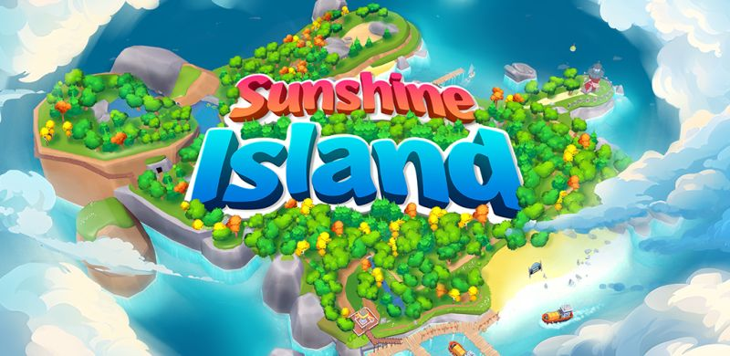

← Back to Guides

Genre
Farming / Simulation
Time Investment
High activity required
Spending
Optional but helpful
Important Before Starting
Critical: This offer requires active gameplay throughout the day. You need to check the game at least every 30 minutes for optimal progress.
- You need to be active throughout the day
- Check the game at least every 30 minutes
- Some spending may help if you don't have a lot of free time
- The early game is critical
Step 1: Rush Tropical Island Town Hall Level 3
Time Limit: You only have 3 days to complete Tropical Island Town Hall level 3.
Very Important Rule
Do NOT upgrade anything that is not required in the quest book early on.
Exceptions
- Cheap farm upgrades
- Cheap land expansions
You need to save resources for Town Hall level 3.
Books and Pens Priority
Spend books and pens on:
- XP boost for plane deliveries
- XP boost for market deliveries
- First row coin boosts
- First row production boosts
These upgrades massively increase progression speed.
Best XP Strategy Early Game
If You Are Very Active
Spam produce wheat. Wheat is the most time-efficient crop for XP and gold.
Before Going to Bed or Leaving
- Start producing long-duration crops
- Start long builds
Production Buildings
Make sure you have at least 1 of every production building.
Important: Plane and market tasks will request many different items.
Save your coupons for difficult plane tasks.
When You Unlock Tropical Island
Immediately start farming:
Key Insight: Coffee beans are the wheat equivalent on Tropical Island. They are the most time-efficient crop there.
Still produce a variety of items for tasks.
Second Builder
If you are active, buying the second builder is very helpful.
Benefits
- Two builds at once
- Faster XP farming
- Faster Town Hall progression
Fast XP Method (VERY IMPORTANT)
To reach level 23 quickly (needed for Town Hall level 3):
Destroy and rebuild a house on Tropical Island.
- Each build gives 100 XP
- Takes 100 seconds
- Extremely efficient XP farming
If you have gems, use them to speed this up.
Best Gem Value
- Piggy bank offer
- Limited-time good deals on the side menu
Fishing
Once unlocked: Always fish.
- Gives XP
- Gives points to buy materials and crops
Fishing Tip: Tap slightly in front of the fish's direction to instantly grab its attention.
Guilds
Join a high-level active guild if possible.
Benefits
- Use coupons to help their deliveries
- Gain more XP than helping yourself
Not mandatory, but very helpful.
After Town Hall Level 3
Once completed:
- Stop the destroy/rebuild strategy temporarily
- Save gold for expensive future upgrades (can exceed 1M gold total)
- Focus on farm expansions and upgrades
If you have excess gold, you can continue XP farming.
Hot Deals and Daily Deals
Use shop sections:
What to Buy
Buy items that take long to produce:
Very useful if you have extra gold.
Extra Free Resources
- Tap the dog to watch ads
- Claim free gift from their website
Easy bonus resources.
Ship Strategy
Important: Do NOT prioritize ship tasks unless you need gold badly.
Focus On
- Market deliveries
- Plane deliveries
Especially after upgrading their XP boosts.
Selling Materials
After Town Hall level 3 and farm expansions:
You can sell extra materials in the warehouse for gold.
They become less important later.
Late Game XP Strategy
At level 25–26:
You can restart the destroy/rebuild house XP farming strategy if you have enough gold.
By this point gold income should be stable.
Achievement: If very active, level 27 is achievable with time to spare. Even with moderate activity, it is still realistic.
Free Gems Method
If you need gems and don't want to spend real money:
- Use the offerwall tab in the shop
- The "Lotsa Slots" offer is commonly recommended
Final Thoughts
This is not a passive offer.
Success Depends On
- Time management
- Resource management
- Efficient XP farming
- Smart spending
If played actively, this offer is extremely profitable.
Profit Summary
Total Potential Reward
$1531+
Completion
Possible with strong activity and optimization
Key to Success: Stay active, manage resources wisely, and optimize your XP farming strategy. This is one of the highest-paying farming game offers available!